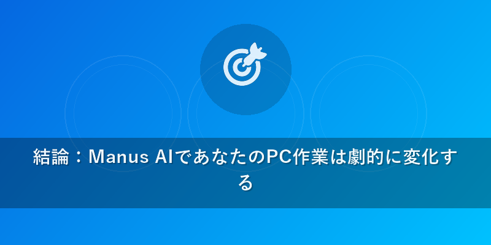
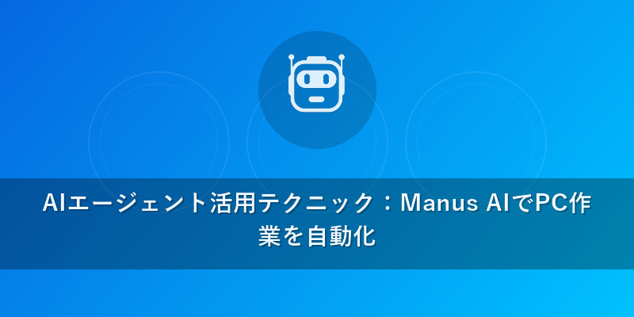
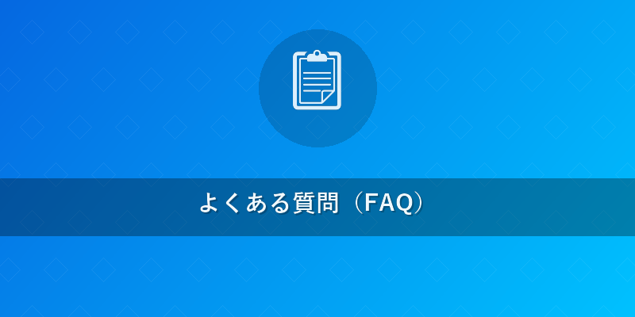

2026年最新版！Manus AI 使い方徹底解説 – 初心者向け完全ガイド
この記事でわかること
- Manus AIの2026年最新機能と実践的な導入方法
- デスクトップ操作自動化からファイル編集、アプリ連携まで、具体的な活用テクニック
- 他の主要AIエージェントとの違いとManus AIがあなたのワークフローに最適な理由

結論
2026年現在、Metaが開発した汎用AIエージェント「Manus AI」は、高度なデスクトップ操作認識とマルチモーダル連携により、あらゆるPC作業を自動化する最も強力かつ直感的なツールです。初心者でも簡単に導入でき、あなたのデジタルワークフローを劇的に効率化し、生産性を飛躍的に向上させます。
本題
1. Manus AIとは？2026年の進化と可能性
Meta発のManus AIは、単なるチャットボットではありません。PC画面を直接「見て」理解し、人間のようにキーボードやマウスを操作する能力を持つ、真の汎用AIエージェントです。2026年までに、Manus AIは以下のような劇的な進化を遂げ、私たちの働き方・学び方を根本から変えています。
- OSレベルでの深い統合: Windows、macOS、Linuxの各OSに深く統合され、システム設定の変更からアプリケーション間のシームレスな連携まで、PCのあらゆる側面を制御できるようになりました。
- 自然言語理解の飛躍的向上: 複雑な指示や意図を正確に解釈し、複数のステップを含むタスクも自律的に計画・実行します。曖昧な指示に対しても、文脈を判断して最適な行動を提案します。
- リアルタイムでの環境適応能力: 突発的なエラーや予期せぬ変更（例：Webサイトのレイアウト変更）に対しても、リアルタイムで状況を判断し、計画を修正してタスクを完遂します。
- マルチモーダル入力・出力: 音声、テキスト、画像、動画などの多様な形式で指示を受け付け、テキストレポート、グラフ、プレゼンテーション、さらには短い動画まで、多様な形式で結果を出力します。
- プログラミング不要のパーソナルAIアシスタント: 専門知識は一切不要。まるで優秀な秘書に指示を出すように、自然な言葉でPC作業を依頼できます。{{internal_link:Manus AIとは？詳細機能}}についてさらに深く知りたい方は、こちらの記事もご覧ください。
2. Manus AIの導入とセットアップ
Manus AIを使い始めるのは非常に簡単です。以下の手順で、あなたのPCにManus AIを導入しましょう。
ステップ1: Manus AIのダウンロードとインストール
- 公式サイトへのアクセス: Manus AIの公式サイト（https://manus.im）にアクセスします。
- インストーラーのダウンロード: トップページにある「無料でダウンロード」ボタンをクリックし、お使いのOS（Windows, macOS, Linux）に合った最新版インストーラーをダウンロードします。
- インストーラーの実行: ダウンロードしたファイル（例:
ManusAI_Setup_v3.2.0.exe）をダブルクリックして実行します。 - セットアップウィザードの進行: 画面の指示に従い、「同意する」を選択し、「次へ」をクリックします。インストール先フォルダを指定し（通常はデフォルト推奨）、「インストール」をクリックして完了を待ちます。
ステップ2: 初期設定と権限付与
- Manus AIの起動: インストール完了後、デスクトップ上のアイコンをダブルクリックするか、スタートメニューからManus AIを起動します。
- システム権限の許可: 初回起動時、Manus AIはPCを操作するために必要な画面認識、キーボード・マウス操作、ファイルシステムへのアクセス権限を要求します。これらはManus AIがあなたの指示を実行するために不可欠なため、全て「許可」を選択してください。
- Metaアカウントでのログイン: Metaアカウント（お持ちでない場合は新規作成）でログインし、設定や学習データをクラウドと同期させます。これにより、複数のデバイス間で設定を共有したり、Manus AIの学習を加速させたりできます。
ステップ3: 環境認識と最適化
- 自動スキャン: ログイン後、Manus AIはあなたのPC環境（インストールされているアプリケーション、OS設定、ブラウザの履歴やブックマークなど）を自動的にスキャンし、パーソナライズされたアシスタンスを提供するための最適化を開始します。
- 完了待ち: このプロセスは数分かかる場合がありますが、完了するとManus AIがあなたのPCを深く理解し、より的確なサポートを提供できるようになります。
3. 最初のタスク実行：基本操作ガイド
Manus AIに初めてタスクを実行させる際の基本的な流れを説明します。
タスクの開始方法
- Manus AIの呼び出し: デスクトップ右下（または任意の場所）に常駐するManus AIアイコンをクリックするか、「Hey Manus」と音声で呼びかけます。
- プロンプト入力: プロンプト入力ウィンドウが表示されるので、実行したいタスクを自然な日本語で入力します。
自然言語での指示例
- 「今週のToDoリストをExcelで作成して、デスクトップに保存して」
- 「昨日の株価データをChromeで検索して、その結果を要約してメモ帳に貼り付けて」
- 「このフォルダ内の全ての画像をリサイズして、別のフォルダに移動して」
実行プロセスの監視
- 計画の提示: Manus AIは指示を受けると、タスクを実行するための「計画」（どのようなステップを踏むか）を視覚的に提示します。確認後、「実行」をクリックします。
- 実行中のステータス表示: Manus AIがタスクを実行している間は、「実行中」のステータスと、現在行っている操作（例: 「Chromeを開いています」「Excelを起動しています」）が表示されます。
- 対話と修正: 途中で不明点があれば、追加で質問をしたり、指示を修正したりすることも可能です。Manus AIは適宜、確認を求めることもあります。
タスクの完了とフィードバック
- 結果の通知: タスクが完了すると、結果を通知し、必要であれば次のアクションを提案します。
- フィードバック: 「このタスクは期待通りに完了しましたか？」といったフィードバックを求められる場合があります。このフィードバックを通じてManus AIは学習し、あなたの好みに合わせて精度を向上させます。

AIエージェント活用テクニック
Manus AIの真価は、その多様な活用方法にあります。以下に具体的なテクニックを紹介します。
PC操作自動化
- 複雑なワークフローの自動化: 毎朝のルーティン（例: 特定のニュースサイトを開き、主要記事を要約してOutlookで自分にメール送信する）を一度指示すれば、スケジュール設定で毎日自動実行。出張申請書の作成、経費精算の自動化など、定型業務を丸ごと任せられます。
- ファイル整理と管理: 「ダウンロードフォルダ内の古いファイルを自動で削除し、特定の種類のファイルを指定のフォルダに移動させる」など、バックグラウンドでのファイル管理を任せ、常に整理されたデスクトップを維持します。{{internal_link:効率的なファイル管理術}}をさらに学びたい方は、こちらの記事をご覧ください。
- データ入力の自動化: Webフォームへの一括入力や、スプレッドシートへのデータ転記作業を、人間では考えられない速度と高い精度で実行。人為的ミスを大幅に削減します。
ファイル編集
- ドキュメントの生成と整形: 「最新のマーケティングレポートをWordで作成し、過去のデータからグラフを挿入して、PDFとして保存」といった指示で、ゼロからドキュメントを作成・編集。レポートのフォーマット統一や、プレゼンテーション資料の自動作成も得意です。
- 画像・動画の簡易編集: 「この写真の背景を削除して、ウェブサイト用にリサイズして」や「この動画の冒頭10秒をカットして、BGMを挿入して」など、一般的な編集タスクをAdobe PhotoshopやPremiere Proなどのアプリを跨いで実行。専門知識なしでプロ並みの作業が可能です。
- データ分析と加工: ExcelやGoogle Sheetsで、「このCSVファイルを読み込んで、売上データを月ごとに集計し、上位5製品を棒グラフで可視化して」といった複雑なデータ処理も、自然言語の指示一つで完遂します。
ブラウザ操作
- 情報収集と要約: 複数のウェブサイトから特定の情報を抽出し、比較分析したり、指定されたフォーマットで要約してレポートを作成。市場調査や競合分析に力を発揮します。
- ウェブサイトテストと監視: 「このECサイトのカート機能が正常に動作するか定期的にテストし、エラーがあればスクリーンショットを撮って通知」といった、ウェブサイトの健全性を監視するタスクを自動化します。
- 予約・チケット購入: 指定された条件（日付、人数、座席など）に基づいて、最適なフライトやコンサートチケットを検索し、購入手続きの補助。プロモーションコードの適用まで自動で行うことも可能です。
アプリ連携
- クロスアプリケーション連携: Microsoft Officeスイート、Adobe Creative Cloud、Slack、Zoom、Google Workspaceなど、PC上にインストールされているあらゆるアプリケーションをシームレスに連携させます。例えば、「Slackで受け取ったタスクをGoogleカレンダーに追加し、関連するファイルをOneDriveに保存する」といった指示も可能です。
- 開発ワークフローの支援: VS Codeでのコード生成補助、Git操作（コミット、プッシュなど）、テストの自動実行、ドキュメント生成など、開発者の生産性を劇的に向上させます。
- CRM/ERPシステムとの連携: 顧客データの入力、レポート生成、タスク管理など、SalesforceやSAPといった基幹業務システムとの連携も自然言語で実現。データの一貫性保持と入力ミスの削減に貢献します。
他のAIエージェントとの比較
Manus AIが他の主要なAIエージェントとどのように異なるか、2026年時点での比較を表形式で整理します。
| 特徴 | Manus AI | Devin | Claude Computer Use | AutoGPT | Copilot (Microsoft 365 Copilot) |
|---|---|---|---|---|---|
| 開発元 | Meta | Cognition AI | Anthropic | オープンソース | Microsoft |
| 得意分野 | デスクトップ操作全般、マルチモーダル、アプリ連携、汎用自動化 | ソフトウェア開発、コード生成、バグ修正、テスト | 自然言語理解、Webブラウジング、長文処理、複雑な指示 | 自律的な目標達成、計画・実行、情報探索 | Microsoftアプリ連携、日常業務支援、コンテンツ生成 |
| 操作性 | 自然言語 (音声/テキスト)、視覚認識 | 自然言語 (テキスト)、コードベース | 自然言語 (テキスト) | 自然言語 (テキスト) | 自然言語 (テキスト) |
| PC操作認識 | 高度な画面認識、OSレベル操作、あらゆるアプリ | コードエディタ/ターミナル中心 | Webブラウザ中心、一部デスクトップ連携、仮想環境 | ターミナル、Webブラウザ、API連携 | Microsoftアプリ内連携、一部OS操作 |
| 統合性 | OSレベル、広範なアプリ連携 | 開発環境に特化 | Webベース、API連携 | ターミナル、Webブラウザ、API連携 | Microsoftエコシステムに深く統合 |
| 自律性 | 高 (計画、実行、反省、適応) | 高 (開発タスクの完遂、自己修正) | 中 (Web browsing、情報整理) | 非常に高 (目標設定から完遂まで、探索的) | 低～中 (ユーザー補助中心、提案型) |
| 2026年の展望 | 汎用AIエージェントの決定版、パーソナルアシスタントの主流、クロスプラットフォームでの利便性向上 | 開発分野での標準ツール、より高度な自己修正・学習能力 | マルチモーダル進化、より複雑なタスク処理、人間との協調 | 専門領域での利用拡大、信頼性・安全性向上、分散型エージェント | OS・アプリ連携の深化、より予測的なアシスト、統合型ワークスペース |

よくある質問（FAQ）
Q1: Manus AIはMacでも使えますか？
A1: はい、2026年現在、Manus AIはWindows、macOS、そして主要なLinuxディストリビューションに対応しています。特にmacOS版は、Apple Siliconチップに最適化されており、高いパフォーマンスを発揮します。公式サイトからお使いのOSに合わせたバージョンをダウンロードし、ご利用ください。
Q2: Manus AIに個人情報や機密情報を扱わせても安全ですか？
A2: Manus AIは、Metaの最先端セキュリティ技術に基づき、データプライバシーとセキュリティを最優先しています。基本的なデータ処理はローカルで実行され、クラウド連携が必要な場合も厳格な暗号化プロトコルを採用しています。ユーザーは設定画面でデータ共有レベルを細かく制御することが可能です。ただし、極めて機密性の高い作業を行う際は、オフラインモードでの利用や、入力内容の吟味を推奨します。
Q3: Manus AIの学習能力はどの程度ですか？カスタマイズは可能ですか？
A3: Manus AIは、あなたの操作やフィードバックを通じて継続的に学習し、パーソナライズされたアシストを提供します。特定のワークフローや表現の癖を学習し、より的確な提案ができるようになります。さらに、高度なユーザー向けには、独自のスクリプトやカスタムプラグインを追加することで、Manus AIの機能を拡張・カスタマイズすることが可能です。APIも公開されており、開発者は自身のアプリケーションとManus AIを連携させることもできます。
おすすめサービス・ツール
この記事で紹介した内容を実践するために、以下のサービスがおすすめです。
※ 上記リンクからご利用いただくと、サイト運営の支援になります。
まとめ
MetaのManus AIは、2026年において、デスクトップ操作自動化の最前線を走る、最も強力かつ汎用的なAIエージェントです。初心者でも直感的に使える自然言語インターフェース、そしてPC操作、ファイル編集、ブラウザ操作、あらゆるアプリ連携を可能にするその能力は、あなたの日常業務や学習、クリエイティブワークを新たな次元へと引き上げます。
他のAIエージェントと比較しても、その汎用性とデスクトップ環境への深い統合がManus AIの最大の特徴です。今日からManus AIを導入し、あなたのデジタルライフを劇的に効率化し、未来の働き方を体験してください。{{internal_link:Manus AIの高度なカスタマイズ方法}}についてさらに深く知りたい方は、こちらの記事もご覧ください。